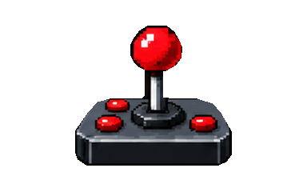
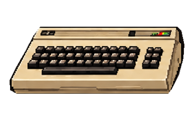
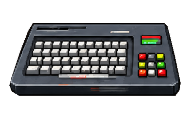
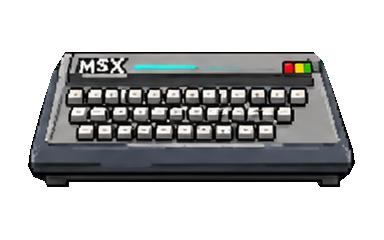
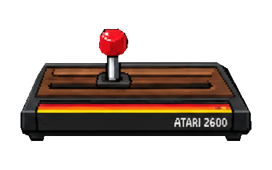

Arcade
Máquinas y juegos recreativos clásicos.
SELECT PLAYER
Un recorrido por ordenadores, consolas y recreativas que marcaron una época.
Explora algunos de los sistemas que marcaron la historia de la informática y el videojuego. Las fichas son divulgativas y no indican la disponibilidad de equipos físicos para su visita.

6 sistemas para explorar

Máquinas y juegos recreativos clásicos.

Un clásico de la informática doméstica.
Un referente de los ordenadores de 8 bits.

El mítico ordenador creado por Sinclair.

Una familia de equipos y videojuegos.

Una consola emblemática de su época.
Los equipos históricos cuentan historias que van más allá de sus especificaciones: quién los utilizaba, para qué servían y cómo cambiaron el acceso a la tecnología. Conocerlos es una forma de comprender y preservar nuestro patrimonio digital.